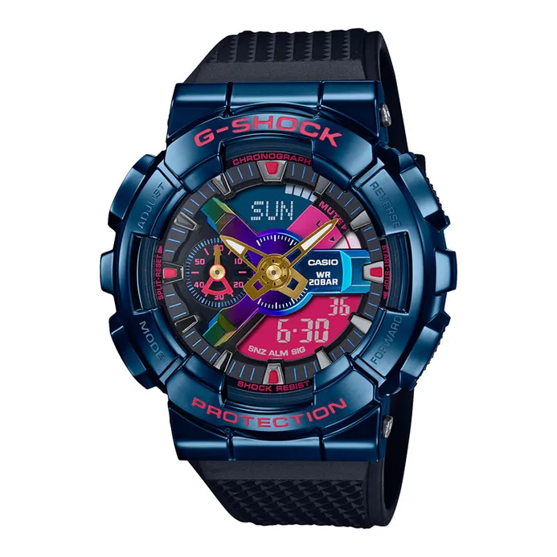

Rp 5.988.000
Kolaborasi eksklusif G-Shock dan Bearbrick dengan tema “Shanghai Night”. Menghadirkan desain futuristik dengan warna deep-blue metallic yang ikonik.
| Model No. | GM-110SN-2APFS |
|---|---|
| Case Size | 51.9 × 48.8 × 16.9 mm |
| Case Material | Stainless Steel + Resin |
| Band | Black Resin Band |
| Glass | Mineral Glass |
| Water Resistance | 200 m |
| Features | Shock Resistant, World Time, Stopwatch, Countdown Timer, LED Light, Full Auto Calendar |